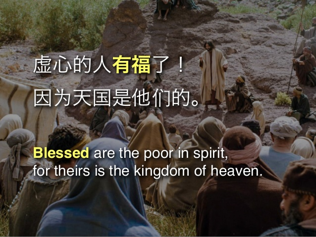

扫描二维码关注"BCBCSermon"
公共号收听更多信息


音频： 下载
1. “有福”是什么意思？
希腊原文是“真正的喜乐”.
- 神跟我们有密切的关系（诗篇144:15）
- 神是我最爱的 （彼前1:8）
- 圣灵天天在我生活中（诗篇36:8）
- 神赐我们各种各样的福气（歌罗西书1:19）
- 我们在神的眼中是义人 （希伯来书12:23；罗马书1:17）
- 我们有永生（约翰福音10:28；启示録21:3-4）
2. “虚心”是什么意思？
- 我们在神前没有什么值得骄傲的（箴言6:16-19；约翰福音15:5），我们像是一个破产的人.
- 我们在神面前算什么（诗篇8:4）
- 我们承认自己的不义, 自大, 骄傲, 我们“痛悔”（诗篇51:17）
- 我们将爱世界的心思, 意念拿掉, 将神的心，放入我们的心中.
- 不是故意将自己压下去, 而是因为看到了神的大能与大爱.
- 认识我们是罪人, 神才是十全十美的.
3. “虚心的人有福了”是什么意思？
- 是天国人的特性.
- 是知道我们“赚”不到 天国, 除非我们
1）不再自我中心 , 而以主为中心（诗篇131:2；以弗所书4:24）
2）谦卑下来（约伯记42:6）
3）时常祷告 （以弗所书3:14-21）
4） 知道自己时时刻刻都离不开神（腓立比书3:8）
5）珍惜神的恩典, 珍惜基督将宝血洗净我们（提摩太前书1:14）
6）知道自己是嘴巴不清洁的人（以赛亚书6:5）
7）知道自己的舌头不饶人（雅各书3:9）
8）知道我们得救是本乎恩, 也是因着信...（以弗所书2:8-9）
9）知道“悔改”的重要性, 而真正“痛改”的人（诗篇51）
4. 如何运用所学的
- 记得神“道成肉身”, 为我们受苦, 且死在十字架上, 为的是给我们一个爱神, 爱人的榜样（约翰福音3:16；腓立比书2:6）
- 要知道神一直在叩门 （启示録3:20）
- 要知道神愿人人都悔改（彼得后书3:9）
- 要作一个新造的人（以弗所书4:21-32；歌罗西书3:1-25）
扫描二维码关注"BCBCSermon"
公共号收听更多信息